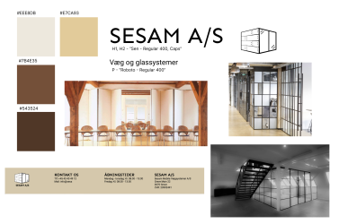
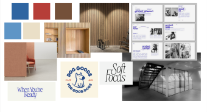
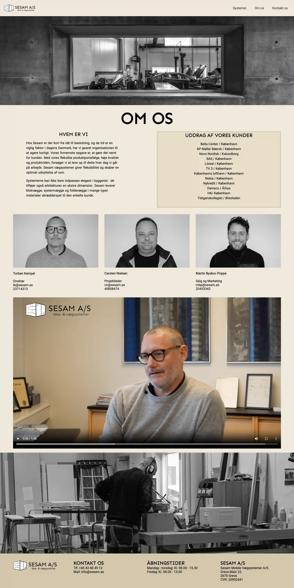

Tema 05 - Grundlæggende indhold
I Tema 05 – Grundlæggende indhold, havde vi vores første gruppeprojekt. Her skulle vi redesigne en eksisterende hjemmeside, og min gruppe og jeg valgte at redesigne ”SESAM AS”. Vi startede vores proces med at lave en masse research – både af vores valgte hjemmeside, men også af hjemmesider der havde samme formål som ”SESAM”. Derefter var vores proces nogenlunde magen til Tema 03’s. I dette tema blev vi også introduceret for GitHub, som vi benyttede os af for at kunne kode i ét dokument i VS code.
Det var også i dette tema, at jeg lærte at gøre brug af Adobe Premiere Pro. Jeg lærte om videoproduktion – både præ - og postproduktion. Til at optage interviewet på vores redesignede side, brugte vi bl.a. et kamerastativ, kamera og en ekstern mikrofon, for at få god lyd i vores video.
Styletile og moodboard
 Redigering af video

Færdigt site
